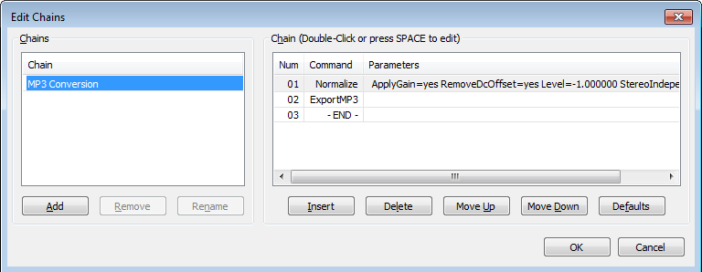
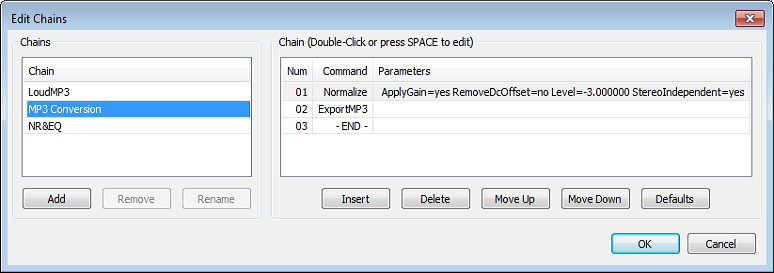
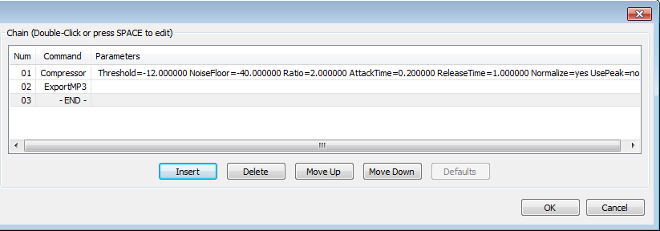
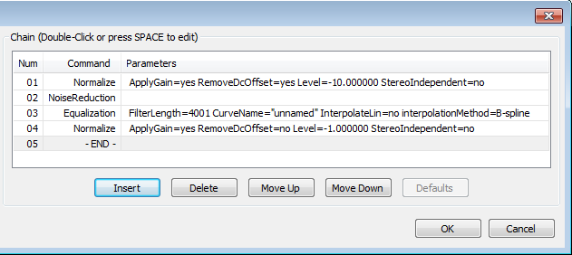

Chains - for batch processing and effects automation
From Audacity Manual
How to use Chains
There are two related Chain commands in the File Menu called Edit Chains and Apply Chain. Look first at Edit Chains to determine if an existing Chain (Audacity only ships with one) will suit your needs or to create a new chain. Next, use Apply Chain to perform the action on your selected audio.
The two uses of Chains are for:
- Batch processing (where many audio files are processed unattended with one or more effects then exported to a new file)
- Effects automation (where the selected audio in the track or tracks in the current project is subjected to the same prescribed sequence of effects, and optionally, a file exported from the entire audio.)
See the examples below.
Edit Chains
Use if you need to create a new Chain or to edit an existing Chain.
- The Chain can include a number of common Audacity functions and effects to be executed in any order you specify.
- To create an audio file as part of the Chain process you must include an "Export" command (such as ExportWAV).
- In many cases the parameters for each command in the Chain can be specified within the Edit Chains dialog.
- 
The left hand box in the dialog (labeled Chains) contains a list of already defined Chains. Until you add a new Chain, it only has a single built-in "MP3 Conversion" Chain. You can:
- Use the button to create a new Chain
- Use left-click (or use the Up or Down arrow on the keyboard) to select the Chain you want to work on
- Delete any user-added Chain with the button
- Rename any user-added Chain with the button
The right-hand box (labeled Chain) lists the ordered sequence of commands for the Chain selected in the "Chains" box on the left. You can:
- Add or remove commands for the selected Chain
- Change the order in which the commands execute in the Chain
- Edit the parameters for some effects in the Chain
For further details see the Edit Chains page.
Apply Chain
Use to show the existing chains. Select the chain you require by using left-click (or using the Up or Down arrow on the keyboard) to select the Chain you want to work on, then either:
- choose to run the Chain on the entire project in the current window or
- choose to run the Chain on selected external audio files in a single directory

- Accessed by:
| If you already have audio in the current project window, you must save and close that project using before applying a Chain to files. |
For more details see the Apply Chain page.
Chain Examples
In this section we look at a couple of examples of how a Chain might be used. In the image below we have added two additional Chains. It is important to note that the only Chain that Audacity ships with is MP3 Conversion (shown as selected in blue). All other Chains must be added by the user.
- 
Example 1: LoudMP3
A batch processing Chain to compress and normalize WAV files then convert them to MP3:
- Insert Compressor to reduce the dynamic range of each WAV, also normalizing them to maximum amplitude of 0 dB
- Insert ExportMP3 to convert them to MP3 format
- Click to close the "Edit Chains" window

- Finally, choose , select the "LoudMP3" Chain then click where you can select the files on which to run the Chain.
Example 2: NR&EQ
An effects automation Chain for the current project that applies noise reduction and equalization:
- Insert Normalize with settings of:
- Remove any DC offset
- -10 dB (to allow for boosting frequencies later in the Chain without clipping)
- Insert Noise Reduction
- Insert Equalization (to perform the frequency adjustment)
- Insert another Normalize at different settings (without offset removal, setting a final amplitude of -1 dB)
- Click to close the "Edit Chains" window

- Finally, choose , select the "NR&EQ" Chain then click to apply the Chain to the selected track(s) in the current project window.
|